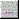

Like any SCADA system one of the essential requirements of Adroit is to log values, so that they can be retrieved for long term analysis and reporting purposes.
At first it would appear that this process is relatively simple, but the logging of values has evolved over the years into a fairly complex sub-system that requires a guide such as this one for you to use this effectively.
For instance, in the past it was potentially necessary to log the same tag using different logging rates and log sizes and even different destinations so multiple log sets could be created within a single datalog agent. Now these multiple log sets are no longer required due to subsequent improvements made to the datalogging sub-system.
When recording or logging the values contained in agents in the Agent Server, the first decision you need to make is the logging method that best suits your logging requirements. Adroit provides the following methods of storing data:
IMPORTANT: If rapid logging is required, then use the Datalog agent to log to the propriety Adroit database.
Proprietary Adroit log files: This logging method uses the Datalog agent and has been specifically designed for the needs of the SCADA industry to provide improved HIGH SPEED logging performance, typically achieving sub-second logging rates.
You should always use this logging method if you need REAL-TIME trending of your data within Adroit itself, such as in a chart on a graphic form.
Note: Unlike in previous versions of Adroit the logging to databases by the Datalog agent is disabled by default in Adroit 10 to force users to use the DBLog agent, which has been specifically designed for this task
A table in an OLE DB database: This logging method is ideally suited for logging slow moving data and NOT for high speed logging and can use the following two agents, depending upon your intended reason for storing the data:
IMPORTANT: BOTH these logging methods are MUCH SLOWER than when using the Datalog agent due to the inherent inefficiencies of the OLE DB interface, in interfacing with remote databases.
Batch processing: In this case, use the DbAccess agent, which is ideally suited for batch processing as it allows you to define your table structure and then map agents to the various fields, so that you can log both TEXT and NUMERIC values separately to create a single record per batch and then requires that you specify the unique trigger to log this batch.
However, the DbAccess agent is not suited to logging a large number of tags to a database as it requires that you specify a trigger for each record that you intend to log and does not provide any tag importing functionality.
Bulk logging of NUMERIC or DIGITAL tags: In this case, use the DBLog agent, which has been specifically designed to efficiently log large numbers of primarily NUMERIC (e.g. Analog) or DIGITAL tags to databases, by providing bulk triggering mechanisms and tag importing functionality and even housekeeping functionality to ensure that only the most current data is stored in the database.
However, the DBLog agent is not suited to batch processing as it uses a predefined database table so it is more difficult to group the values that belong to the same batch and it can ONLY log TEXT by converting all the logged values to Strings.
As previously stated this is a fast logging method facilitated by the Datalog agent that is designed to provide improved logging performance, by using datalog (.LDG) files to store the active logged data and log backup (.LDB) files that store the historical data.
You should always use this logging method if all you need to do is to display (report) your data within Adroit itself, such as in a chart on a graphic form.
When configuring the Datalog agent, firstly select the required data-logging
Mode, which depends upon how this process value is being used
 as follows:
as follows:
It is important to understand that a value is only logged when it changes and then ONLY when this value meets the conditions imposed by the specified Deadbands, which can be used:
So the effective logging rate is determined by configuring the Time... and/or Value deadbands, as follows:
IMPORTANT: When using the Demand Mode, you need to configure the Support compression algorithm on demand logging global datalogging setting via the Advanced... button, in order to use these Datalog compression algorithms.
Note: To use a logging Compression Method, you need to use a Time... logging deadband that is greater than 0.
If you are using the Time... deadband to compress your log file to store more data then the Average method is recommended, since it calculates a time-weighted average of all the values that were recorded during the Time deadband period and this average is then logged at the end of this period.
In other words a 1-hour average (as opposed to a 1-hour interval raw log) will provide a more accurate representation of what happened in the plant, than the same raw log. Since the raw log value will only represent the instantaneous value in the hour, not the average for the hour.
It is important to know that a value is only logged when it changes and when this change in value meets the conditions imposed by the specified Deadbands because this means that the specified Length... of the datalog (.LDG) file is only an estimation, which assumes that this value will change substantially at the effective rate of logging determined by the deadbands, however:
The Datalog agent allows for a maximum of 53000000 records. This means that the specified datalog Length... (or period) and Time... deadband combination may not exceed 53000000 records. This corresponds to a maximum of 1010.9 MB of data at 20 bytes per record, which means 613 days at 1 second or 30 days at 50 ms.
Note: The minimum Time... deadband allowed is 10 ms which only provides a maximum Length... (or period) of 6.13 days of logged data.
Furthermore, you can use Out of limit logging to bypass this process and immediately log any out of limit values (values that are not within their specified operating range), by ignoring the effective rate of logging, which is specified by the Time... deadband and using the faster log rate specified by the Out of limit logging -> Time... setting instead.
In other words, as soon as the logged value that is being logged, enters or leaves its user-specified limit range it is logged unconditionally, and continues to be logged at the new time deadband as specified by the Out of limit logging time setting (Time...). This allows the Datalog agent to catch short spikes whose duration is less than the normal time deadband logging interval (Deadbands -> Time...)
Note: To disable out of limit data logging, set both of the limit values are zero (default values), then NO limit checking is done and the Datalog agent operates normally by ONLY using the normal time deadband logging interval (Deadbands -> Time...).
Typically the specified Length... of the datalog (.LDG) file should not exceed what is required for operational trending purposes. In other words, should an operator only need to see 24 hours of trend data to properly monitor and control his plant then the datalog size should only be set for 1 day.
Note: Any datalogs that cause their .LGD file to be greater than 2 GB will fail to start and user is notified accordingly and an associated eventlog entry is also created.
When the allocated size of the datalog (.LGD) file is filled, it wraps (starts again at the beginning). At which time one or more datalog backup (.LGB) files are created to store this older (historical) data. The datalogging sub-system automatically retrieves this historical data from these files, when this data is required by trends (charts) or other requests for historical data.
Note: To disable datalog backups for a particular Datalog, set the backupPeriod slot of this Datalog agent to 0.
Tip: You can use these datalog backup (.LGB) files to extend the potential amount of logged data without creating larger log files, since larger log files have the side effect of causing the Agent Server to take longer to start up. In this case, while the active log (.LGD) file can remain small, the log backup (.LDB) files can store historical data for much longer time periods.
These datalog backup (.LGB) files also prevent the need to multiple proprietary datalog sets with increased periods and larger time deadbands and also replaced the legacy backup capability provided by the Systemdatalog agent.
When the associated .LGD file wraps, each Datalog agent creates their own backup (.LGB) files, as follows:
In Adroit 10, the naming convention of these backup files have improved compared to Adroit More details:
When creating monthly datalog backup files in Adroit
For instance:
1. A data value with a timestamp of 2017-11-21 10:00:00 would go to a backup file called 2017-11-21-m-11
2. A data value with a timestamp of 2017-11-22 10:00:00 would go to a backup file called 2017-11-22-m-11
In Adroit 10, the name of the backup file only specifies the year and month so that now only one file is created for the month.
For instance:
1. A data value with a timestamp of 2017-11-21 10:00:00 would go to a backup file called 2017-11
2. A data value with a timestamp of 2017-11-22 10:00:00 would also go to a backup file called 2017-11
In addition to creating .LGB files for Adroit to retrieve historical data, you can also create .CSV files to enable third party applications to trend or report this data too, by checking the Enable CSV backups checkbox at the bottom of the Datalog agent.
In this case these .CSV files also contain a month of data and are stored in the same folder as the .LGB backup files and adhere to the SAME naming convention. Each .CSV is formatted to create reports by storing the logged data in the following 3 column file structure: Date (yyyy/mm/dd HH:mm:ss), Value and Quality.
IMPORTANT: If .CSV files are being created, Adroit ONLY only looks for and uses the data in the .LGB files. Therefore if you have deleted aN .LGB file but still have the .CSV file for the same period, Adroit is unable to retrieve the historical data for this time period.
Note: These .CSV files are optional and are ONLY created for the Datalog agent/s that have this option selected.
Since multiple datalog backup (.LGB) files and optionally .CSV files are created by each Datalog agent, the Delete backup files older than (days) housekeeping feature (at the bottom of each Datalog agent) ensures that the created .LGB (and .CSV) files older than a specified number of days (default 90 days) are deleted from the backup folder.
Note: If you want to keep data older than this specified housekeeping number of days, then ensure that you have a MANUAL backup procedure in place to ensure that you move these older .LGB files to the required folder. However, in this case Adroit is unable to access the data contained in the moved files!
Tip: This is NOT required when reducing the logging period.
As mentioned previously this logging method is ideally suited for logging slow moving data and NOT for high speed logging and can use the following two agents, depending upon your intended reason for storing the data:
IMPORTANT: BOTH these logging methods are MUCH SLOWER than when using the Datalog agent due to the inherent inefficiencies of the OLE DB interface, in interfacing with remote databases.
Batch processing is an ideal use for logging to a table in a database because it is inherently slow moving as it only requires logging data at the end of a batch job or a shift.
As stated above the DbAccess agent is ideally suited for batch processing because this agent allows you to define your table structure and then map the required tags to the various fields, so that you can log both TEXT and NUMERIC values separately to create a single record per batch and then this agent requires that you specify the unique trigger to log this batch.
This agent can also be used for the exchange of batch-specific data from databases. For instance, by retrieving the required set points from a database before the batch is started.
However, the DbAccess agent is not suited to logging a large number of tags to a database as it requires that you specify a trigger for each record that you intend to log and does not provide any tag importing functionality.
Note: All DbAccess
Agents require a scan point license to run. This license is checked prior
to actually doing a DbAccess transaction for the first time (on a per
agent basis) and is only returned when the agent is deleted.
license to run. This license is checked prior
to actually doing a DbAccess transaction for the first time (on a per
agent basis) and is only returned when the agent is deleted.
These agents require careful consideration in terms of both the number of agents to be used and the amount of work that they are to do, as they are resource "hungry".
Hence, both the Agent Server memory and overall memory usage should be monitored during configuration to avoid the excessive usage of these resources. The CPU usage should be monitored while during operation to ensure that the computer is able to handle the additional load.
The DbAccess Agent only establishes one connection per database; so many DbAccess Agents may share the same connection if they transact with the same database.
IMPORTANT: If you are connecting to a database across the network and your Agent Server is running as a service, then ensure that the user profile that the Agent Server service uses to log onto the computer HAS the necessary rights to browse the network and connect to the remote database.
Check the Connect to database checkbox after specifying the required database, to allow the table to be selected from the database and then click the Update button.
Specify the name of the table that you want to log your batch data to in the Table name edit box, either by typing in the name or if there is at least one connection to the database identified in the connection string, then the browse button

can be used to select the required table, from the list of tables available in the selected database.While the DbAccess agent is able to perform a number of transactions on a database, in this case all you typically use the default Transaction Type of Insert row, which does NOT require you to specify the Identify row edit field.
Click the  button to add the required number of tag-to-field mappings, which allows you to define the structure of the specified table in the specified database.
button to add the required number of tag-to-field mappings, which allows you to define the structure of the specified table in the specified database.
Tip: If necessary you and specify the required format of the tag in this field in the Field Format column, by using the available Field Format Specifiers depending on the data type of the tag that is being assigned to the field.
Typically you will ONLY want to specify a trigger for this batch job, so click the Edit... button in the Transaction Scheduling and Triggering group and then browse in the required Trigger tag and the Condition that must be met by this value (namely: when zero, when non-zero and when changed) before this batch is logged.
Tip: The Details... button opens a dialog that gives the status of the transactions and shows any database connection errors.
The DBLog agent has been specifically designed to efficiently log large numbers of primarily NUMERIC (e.g. Analog) or DIGITAL tags to databases, by providing bulk triggering mechanisms and tag importing functionality and even housekeeping functionality to ensure that only the most current data is stored in the database.
Note: While the DBLog agent can be configured to log STRING tags, it can only do this by converting all the logged values to Strings, so in this case it is better to limit this DBLog agent to ONLY containing STRING tags.
In other words, instead of logging each numeric (e.g. Analog) and/or Digital value separately, you can simply specify a list of tags to log and either export/import this list from a CSV file or browse in this list individually in the required DBLog agent.
Note: While DBLog agents typically log Numerical and Digital values or bits, they can be configured to convert ALL values to Strings, by checking the String logging checkbox - but this is NOT recommended for general use, since it requires MORE SPACE to store String values compared to Numerical values and this can also cause formatting problems.
So in this case it is better for a DBLog agent to ONLY contain STRING tags.
However, the DBLog agent is not suited to batch processing as it uses a predefined database table so it is more difficult to group the values that belong to the same batch and it can ONLY log TEXT by converting all the logged values to Strings.
Each agent added to a DBLog agent generates its own SQL transaction, so the maximum number of agents per DBLog agent depends upon their required logging interval (rate).
In other words, the number of agents that you need to log determines their possible or achievable logging rate, in that the greater the number of agents you choose to log, the lower their achievable logging rate.
While DBLog agents typically log Numerical and Digital values or bits, they can be configured to convert ALL values to Strings, by checking the String logging checkbox - but this is NOT recommended for general use, since it requires MORE SPACE to store String values compared to Numerical values and this can also cause formatting problems.
This should typically ONLY be set when you need to log string values in bulk, such as when providing the source data for the SCADA Intelligence tool to analyse your data in detail.
The DBLog agent provides a number of bulk logging methods, so it is important that you select the correct one and configure its related settings correctly to ensure that the relevant data is being logged.
For this logging method specify the required VALUE deadband for each tag to ensure that only meaningful changes in value are logged via the Deadband column of either the CSV file or the Tag list.
In other words, specify the MINIMUM Value which the value being logged must EXCEED for it to be logged. Since, if the change in value is LESS than this value then this value is NOT logged.
Note: To prevent this logging method from logging the tags when their quality status changes, add the following registry value and set it to 1: DisableOnQualityChangeLogging.
The Log all on change logging method logs all the listed tags if ANY of their tag values change, if you decide to use this method then also specify the VALUE Deadband for each tag to ensure that only meaningful changes in value are logged.
Use the Log on change method, in which ONLY the tags that change are logged, typically when their value or quality status changes.
IMPORTANT: When using this logging method for DIGITAL values, ensure that the value Deadband is 0, otherwise NO values will be logged.
Note: To prevent this logging method from logging the tags when their quality status changes, add the following registry value and set it to 1: DisableOnQualityChangeLogging.
However, if you are trending these DIGITAL tags in a chart, then you ALSO need to create another DBLog agent for these same Digital agents that uses the Log all on interval method, whose Logging interval is set to the charting period to ensure that the current state of all these DIGITAL tags will be displayed. More details:
When charting DIGITAL tags, the chart ONLY displays the value of each tag for the time specified by the specific charting period.
But if you ONLY use the Log on change logging method, then if a DIGITAL tag does not change in value during this charting period then no data is returned, even though it has an existing valid state.
This is why you need the other DBLog agent for the same Digital agents that uses the Log all on interval method, whose logging interval is set to the charting period, which ensures that the last known state of each DIGITAL tag will be displayed by the chart.
The following triggering methods are seldom used as they generally are used for batch processing:
The following top checkboxes of the DBLog agent configuration dialog affect the general operation of this agent, as follows:
The Enable checkbox allows you to start/stop this agent from logging the listed tags.
IMPORTANT: If this Enable checkbox is not checked then this agent will NOT log tags.
Note: This is unchecked by default as it is NOT recommended for general use, since it requires MORE SPACE to store String values compared to Numerical values and this can also cause formatting problems.
This should typically ONLY be set when you need to log string values in bulk, such as when providing the source data for the SCADA Intelligence tool to analyse your data in detail. In this case it is recommended that you ONLY add string values to this DBLog agent.
The DBLog agent provides the following methods for specifying its list of tags:
Note: The Tag list of the DBLog agent is automatically sorted alphabetically, so the last tag that you add may not be at the end of this list.
.Then save the CSV file and click the Import... button and browse for this required CSV file to import the configured tag list.
Note: In this case you need to manually add the first tag to the Tag List, by using one of the first two methods, since you cannot export an empty list.
Use the following fields to specify both the OLE DB database and table that you want to log your tags to:
Note: While these fields specify SQL, you are able to connect to any OLE DB database.
By default this field specifies global, which uses the Global OLE DB connection string of the Agent Server, which can be specified in the Adroit Config Editor, as follows:
Note: While multiple DBLog agents can log to the same table, this can cause database management complications, if you need the tags within specific DBLog agents to be stored for different durations. See the Housekeeping section below...
In order to help you ensure that you ONLY store the most useful data in the database, by default the DBLog agent implements Housekeeping, so that any records older than 90 days are deleted, by default.
Housekeeping is simply a cleanup action triggered on the table, specified by the SQL table name field of the database identified by the SQL connection string field.
Modify this setting, by increasing or decreasing the maximum period that records should remain in the table, depending upon the storage capacity you have available for your database and how useful this data becomes to you the older it gets.
Note1: A value of 0 disables this housekeeping functionality, provided NO OTHER DBLog agents log to the specified table that have configured housekeeping!
Note2: By design, one additional day's worth of data is kept for you.
By default housekeeping takes place at the turn of midnight, however you can change this by adding the HousekeepingHour registry setting to specify the hour of the day that you want this housekeeping performed.
As mentioned previously Housekeeping is a cleanup action triggered on the specified table that a DBLog agent logs its tags to. Furthermore, multiple DBLog agents can log to the same table. Therefore when multiple DBLog agents log to the same table that have DIFFERENT Housekeeping periods configured, the SHORTEST period will always be used!
By way of explanation, consider the following Housekeeping configuration examples:
Furthermore, when performing housekeeping you can also specify an OPTIONAL Backup folder, which is used to backup the old data before it is deleted from the table.
If you implement this Backup folder, we recommend that this is located on a backup or external drive that will not affect your drive on which your database is installed.
IMPORTANT1: This folder needs to exist on the computer where the database is installed (this is NOT the Agent Server computer when using a remote database); otherwise HOUSEKEEPING WILL NOT HAPPEN!
IMPORTANT2: ALSO ensure that the specified folder name does NOT contain SPACES or housekeeping will ALSO NOT HAPPEN!
IMPORTANT3: ALSO ensure that the database has the necessary permissions needed to add these files to this specified folder or housekeeping will ALSO NOT HAPPEN!
This Backup folder therefore specifies a path that is relative to the computer on which the database is installed (this is NOT the Agent Server computer when using a remote database).
Note: Leaving the Backup folder field empty disables this backup functionality, which is the default setting.
When this backup folder is being used each DBLog agent creates a daily flat cabinet (.CAB) file of the data that is to be deleted (by the SHORTEST Housekeeping setting if multiple DBLog agents log to the same table).
These files are self-extracting SQL scripts, which you need to manually execute against the required SQL database, in order to import your data.
PLEASE NOTE: It is up to you to manage the files stored in this folder yourself.
Once the DBLog Agent has been configured and enabled, it creates the table specified by the SQL table name field, which has the following predefined structure:
In addition to this table the DBLog agent also creates the Adr_DBLog_AgentDetails table, which is updated when: the agent is started; or when its tag list is changed; and unconditionally every morning at 01h00.
This table contains all the agents referenced by all DBLog agents to provide more details about these referenced agents, which can be used to provide more context about them for reports.
For instance, this provides their agent type and agent description and is especially useful for Analog agents in providing their unit of measurement, their alarm limits and value ranges.
If you do not intend to make use of this table then you can prevent this table from being created by all of your DBLog agents, by adding the following registry value and setting it to 0: DumpAgentDetailsEnabled.
The DBLog agent also creates the Adr_DBLog_Housekeeping_Config table, which contains a list of all DBLog agent tables requiring housekeeping, which is required to perform this housekeeping without affecting the logging operations of the DBLog agents.